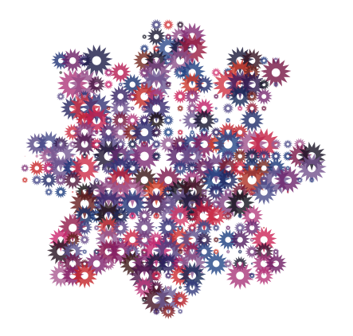

In your copy of the script, are there indentations in the last section? They might have just gotten swallowed up by the forum, but they're important, since python uses them to figure out the structure of the program. It should be
for x, y in grid(ovsx, ovsy): sz=random(dotsize) px = x*dx-sz py = y*dy-sz if myshape.contains(px, py): # flower.contains instead of tp.contains fill(random(), 0, -5, random()) drawpath(cog[0])(px+random(-ox, ox), py+random(-oy, oy), sz*4)right?
No offense intended if that's not the problem! I'm no expert or anything; I just started using NodeBox today myself.
Hi. Thanks for the reply, the code i have is indented in NodeBox. When I copied and pasted it into the blog it remove the indents.The error is defined as:
TypeError: 'NoneType' object is not callable
There is something wrong with the last line:
drawpath(cog[0])(px+random(-ox, ox), py+random(-oy, oy), sz*4)How it is written there means the same as:
something = drawpath(cog[0]) something(px+random(-ox, ox), py+random(-oy, oy), sz*4)But drawpath() doesn't return a command or anything you can append parameters to. That's what the error is saying: "drawpath returns nothing I can call as a command".
You probably mean to do something like this:
scale(sz*4) translate(px+random(-ox, ox), py+random(-oy, oy)) drawpath(cog[0])You're almost there ;-)
Hi,
I tagged your code in. The error has gone no cog 's have been drawn? Thanks for your help so far.
Can you mail me the script together with the source SVG files?
(tom at organisms dot be)
I've cleaned it up a bit:
size(500, 500) svg = ximport("svg") data = open("path.svg").read() flower = svg.parse(data) flower = flower[0] data = open("diamond.svg").read() cog = svg.parse(data) # This is the trick that makes it work: # I need to make a list copy of the path returned from SVG, # otherwise I can't translate each copy indivdually # and the cogs all end up in the top left corner. cog = [pt for pt in cog[0]] scale(2.5) # flower size translate(20, 20) # flower position spacing = 6 # more or less cogs onscreen for x, y in grid(WIDTH/spacing, HEIGHT/spacing, spacing, spacing): if flower.contains(x, y): fill(random(), 0, random(), 0.8) # each cog's color push() translate(x, y) scale(random(0.8)) # makes cogs bigger or smaller drawpath(cog) pop()

Brilliant. Thanks so much for the help.
I also edited your script to use a tif image instead of the cog image:
size(500, 500)
svg = ximport("svg")
data = open("path.svg").read()
flower = svg.parse(data)
flower = flower[0]
coreimage = ximport("coreimage")
scale(2.5) # flower size
translate(10, 10) # flower position
spacing = 8 # more or less cogs onscreen
for x, y in grid(WIDTH/spacing , HEIGHT/spacing, spacing, spacing):
if flower.contains(x, y):
fill(2, random()/4, random(), 1) # each cog's color
push()
translate(x, y)
scale(random(-0.16)) # makes cogs bigger or smaller
image("lily.tif", 0, 0)
pop()
thanks again!
Have fun!
PS.: you can put pieces of code you post between < code > and < /code > (without the spaces) to turn on the code coloring.
Hmmm.
I was wondering if I could make a futher adaptation to your code so that spacing between each duplicate is proportional to the previous duplicates size, so I guess what I mean is that duplicates are not arranged in a grid as prevously and would not overlap with the randomness of scale was turned up to the max. These example should hopefully illustrate what I mean.
:)
http://firstrung.co.uk/dbimgs/bubbles_big.jpg
http://www.norcimo.com/blog/archives/upload/2006/11/Bubbles06r.jpg
http://www.jtkirkland.com/drawing/draw.detail.AroundtheBend.jpg

{kind=link}
{kind=link}
{kind=link}
error returned
Posted by Viki on Sep 01, 2007Hi , I still can't get this script to work. Sorry i'm still a bit naive with my scripting. The error occurs in the last few lines of script (i think). Please could someone offer a solution here. Thanks in advance:
size(500, 500)
ovsx = 80
ovsy = 80
ox = 0
oy = 1
dotsize = 5
dx = WIDTH / float(ovsx) +2
dy = HEIGHT / float(ovsy) +2
# import a new particle
svg = ximport("svg")
data = open("diamond.svg").read()
cog = svg.parse(data)# a list of all the paths in the SVG file
# SVG path instead of textpath
svg = ximport("svg")
data = open("path.svg").read()
paths = svg.parse(data)
myshape = paths[0]
for x, y in grid(ovsx, ovsy):
sz=random(dotsize)
px = x*dx-sz
py = y*dy-sz
if myshape.contains(px, py): # flower.contains instead of tp.contains
fill(random(), 0, -5, random())
drawpath(cog[0])(px+random(-ox, ox), py+random(-oy, oy), sz*4)